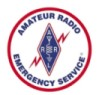
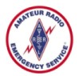
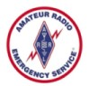

| Home | Location | Membership | Newsletters | Repeaters | Contacts | Emergency Comm. | Training. |

THE AMATEUR'S CODE:
THE RADIO AMATEUR IS:CONSIDERATE…never knowingly operates in such a way as to lessen the pleasure of others;
LOYAL…offers loyalty, encouragement and support to other amateurs, local clubs, and the American Radio Relay League, through which Amateur Radio in the United States is represented nationally and internationally;
PROGRESSIVE…with knowledge abreast of science, a well-built and efficient station and operation above reproach;
FRIENDLY…slow and patient operating when requested; friendly advice and counsel to the beginner; kindly assistance, cooperation and consideration for the interests of others. These are the hallmarks of the Amateur spirit;
BALANCED…radio is an avocation, never interfering with duties owed to family, job, school or community;
PATRIOTIC…station and skill always ready for service to country and community.
The original Amateur’s Code was written by Paul M. Segal, W9EEA, in 1928.